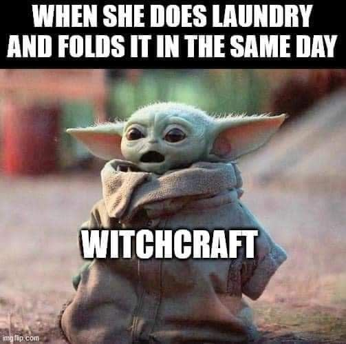
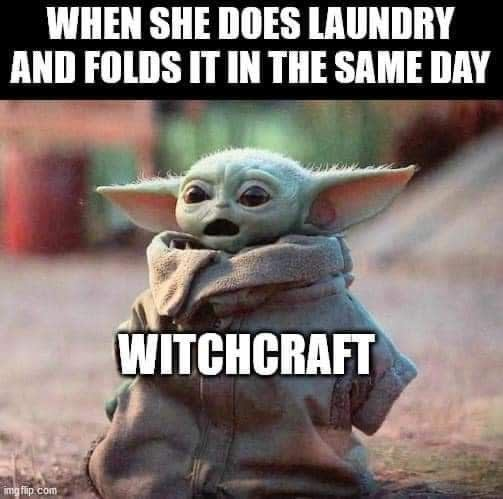

Welcome to PJ EXTRAVERSE, a universe where humor reaches new lows and our laughs hit unparalleled highs. This is the realm of the Pathetic Joke Extravaganza—where no pun is too poor, no joke too juvenile, and no gag too groan-worthy. In PJ EXTRAVERSE, we embrace the humor that makes you wince and wonder, “Did they really just say that?” We celebrate the art of cringe-worthy comedy that elicits eye-rolls and chuckles in equal measure. Here, we proudly wave the banner of the bad joke, standing as the ultimate champions of the humorous underdog. Imagine a place where every knock-knock joke has a home, and every pun gets its moment in the spotlight. Our universe is a haven for those who revel in the ridiculous and delight in the dreadful. We believe that the simplest jokes, the ones that make you groan in disbelief, hold a special kind of magic. PJ EXTRAVERSE is not just a place—it's a community of like-minded individuals who find joy in the absurd and the silly. We're a collective of jesters and jokesters, united by our love for humor that defies convention and embraces the unconventional. We thrive on the playful, the peculiar, and the perfectly pathetic. Our mission is to turn every cringe into a chuckle, every groan into a grin. We're here to prove that humor doesn't always have to be highbrow to be high-spirited. Whether it's a classic dad joke, a pun so pun-ishingly bad it hurts, or a one-liner that leaves you wondering why you laughed in the first place—we've got it all. Join us in PJ EXTRAVERSE, where the jokes are free-flowing, the laughs are never-ending, and the spirit of silliness reigns supreme. Step into our world, where we make the cringe-worthy unforgettable, and the pathetic, iconic. Ready for a laugh that’s fantastically feeble? Then you’ve found your place in PJ EXTRAVERSE!
 
